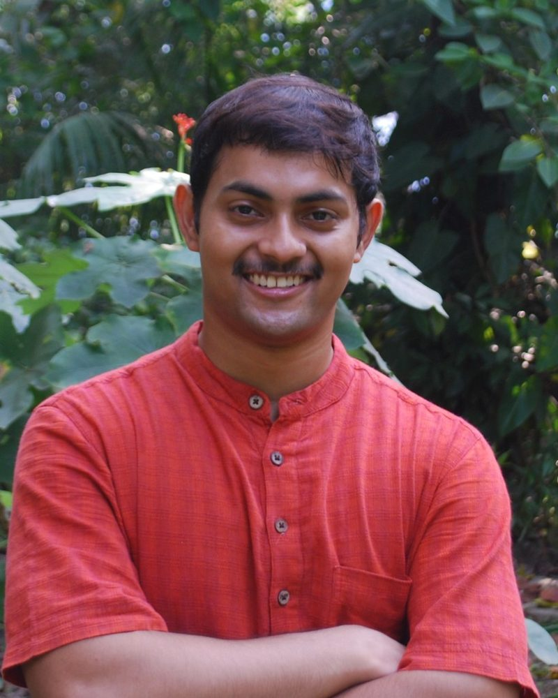

01About me
Hi, I'm Barshneyo, a Calcutta-based nerd with a soft spot for dots and lines. I went from a BSc in Bengaluru to maths at Jadavpur to data science and AI at RKMVERI, Belur, and somewhere along the way I fell for graphs. It's ridiculous how much of the world you can explain with a few nodes and edges.
These days I use them to make trucks, drones and money behave. But that's the work bit. Here's the rest of me.

Toolbox
- Graph theory
- Algorithms
- Combinatorics
- Theoretical cryptography
- Operations research
- Robust optimization
- Reinforcement learning
- Deep learning
- Graph neural networks
- Python
- PyTorch
- SQL
When I'm not staring at graphs…
- Gym
I'm an iron head.
- Singing
I sing a lot (not just in the toilet)
- Cooking
I love cooking, because I'm a feisty little bitch.
- Ragebaiting
I love ragebaiting my favourite people. If it were a sport, I'd have more medals than Michael Phelps, and I'd ragebait him about it.
- Reading
I've read more Satyajit Ray, Kipling, Ruskin Bond and Alfred Tennyson than Shakespeare. And I read Shakespeare too.